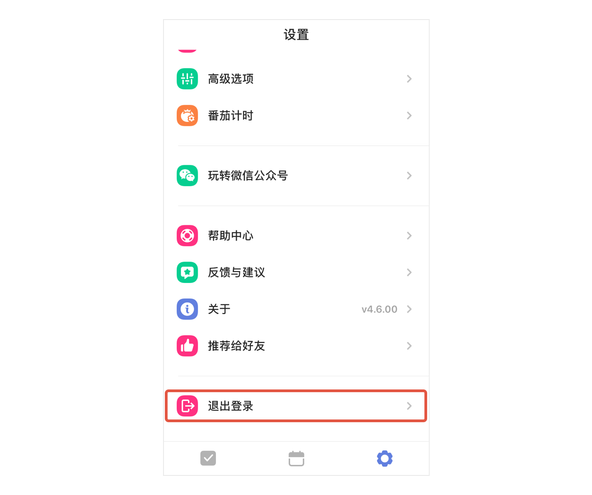
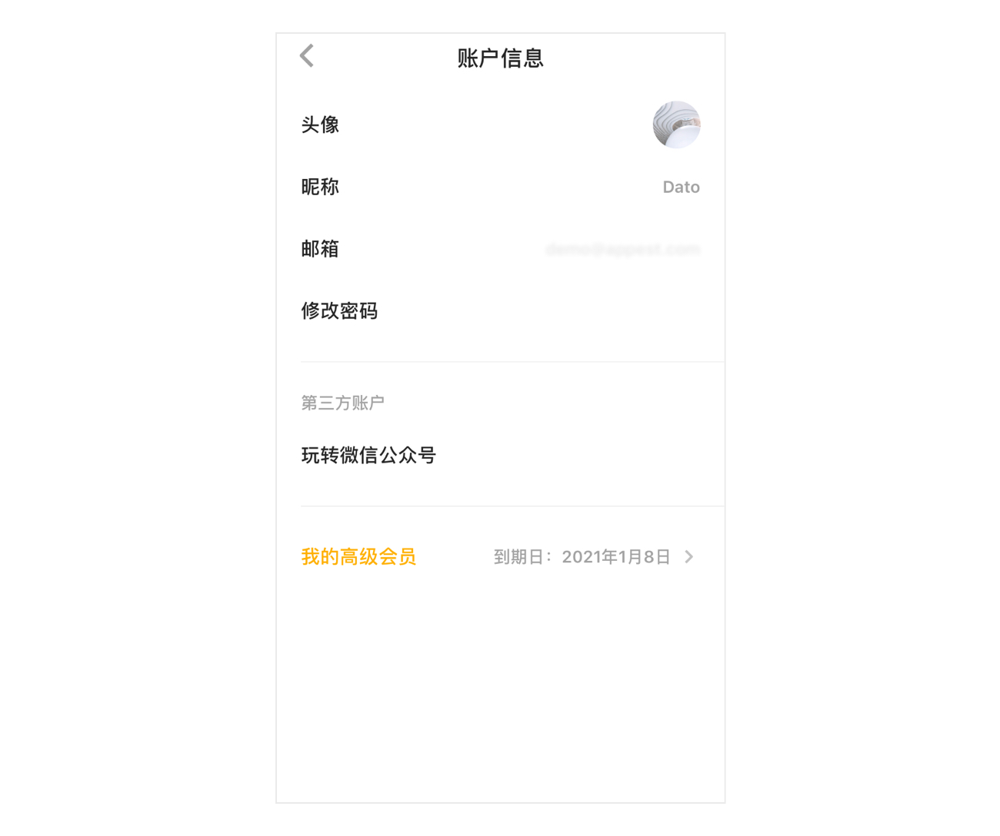

账户设置
注册和登录
- 注册
您可以使用邮箱注册滴答清单，还可以通过 QQ 、微信、新浪微博账号登录到滴答清单。
用邮箱注册滴答清单，滴答会发验证邮件到注册的邮箱中。若邮箱未验证，账户信息界面中邮箱后面会显示警告图标，点击后进入邮箱页面，可以点击重新发送验证邮件。
- 登录
若您已有滴答账号，可以直接输入邮箱及密码登录，也可以 QQ 、微信、新浪微博登录。
- 绑定
如果你使用 QQ 、微信、新浪微博账户登录滴答清单，可以绑定您的邮箱：
点击设置-头像-【账户信息】，选择邮箱，进入邮箱页面，输入邮箱地址，点击验证码输入框右侧的【发送验证码】，会发送验证码到要绑定的邮箱，正确输入验证码，和自己设置的密码，即可绑定成功。
若您使用邮箱登录，可以绑定微信，就可以使用滴答清单的微信服务，及微信登录。
点击设置-玩转微信公众号，按照提示绑定微信即可。 注：暂不能绑定 QQ 号和新浪微博账号。
如果你是 TickTick 用户，可以点击登录界面下方【切换至 TickTick 】登录； 注：TickTick 用户要使用滴答清单，需要重新注册一个滴答清单账户，然后[导入 TickTick 账户]内的任务信息。
滴答清单提供两种帐户：免费帐户和高级帐户。
免费帐户 ：任何人都可以免费创建滴答清单帐户。免费帐户可以使用这篇指南中介绍的所有核心功能和更多其他功能。
高级帐户 ：滴答清单高级帐户有诸多专享功能，能帮你更好的使用滴答清单，有按月和按年两种订购方式。要了解滴答清单高级帐户专享功能详情，请访问滴答清单高级帐户页面。
忘记密码
如果你使用邮箱登录，忘记了登录密码，点击登录框下方的忘记密码，或者忘记密码?
在打开的网页中输入你的注册邮箱，点击重置密码。
去你的注册邮箱查收邮件，按照邮件里的指示重新设置密码即可。
退出登录
如果你需要退出已登录账户，点击主页面下方的【设置】tab，进入设置中心，点击页面底部的【退出登录】即可。
下一次登录时需要重新输入密码。

个人设置

- 上传头像
上传一个具有辨识度的头像代表自己。
点击头像-【账户信息】-【头像】，支持拍照和本地照片。
- 修改昵称
设置一个昵称，可以更加方便你的好友或者家人在共享清单中认出你。
点击头像-【账户信息】-【昵称】，输入昵称即可。
- 修改邮箱
点击头像-【账户信息】-【邮箱】，即可输入新邮箱地址。
- 修改密码
点击头像-【账户信息】-【修改密码】。输入当前密码和新密码，即可成功修改。